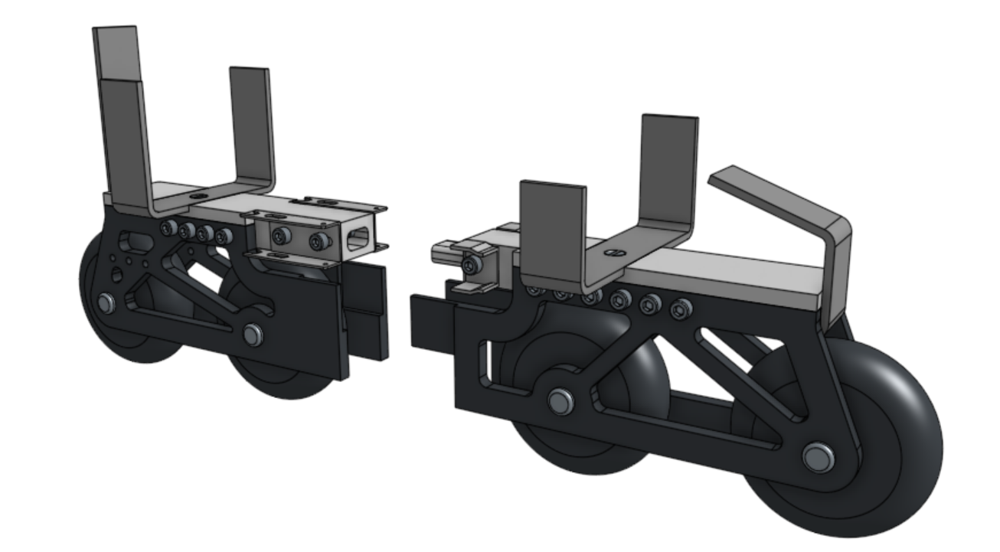
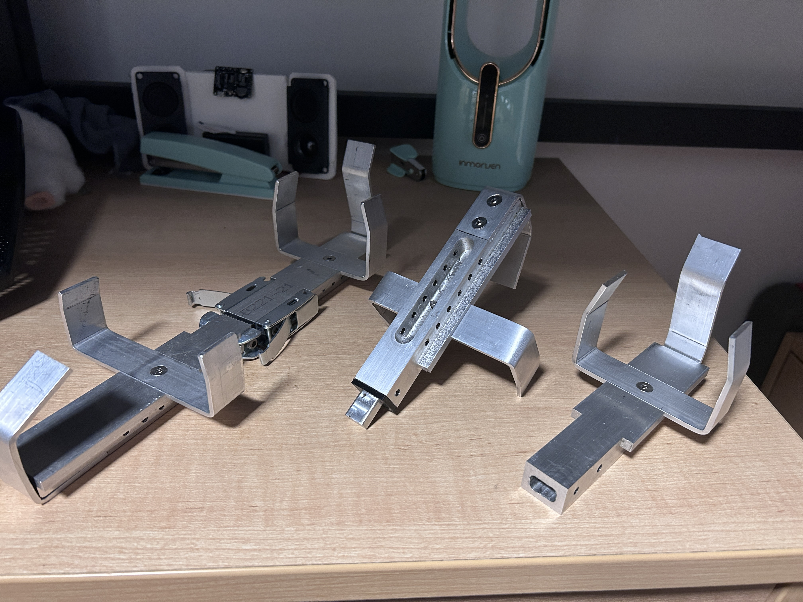
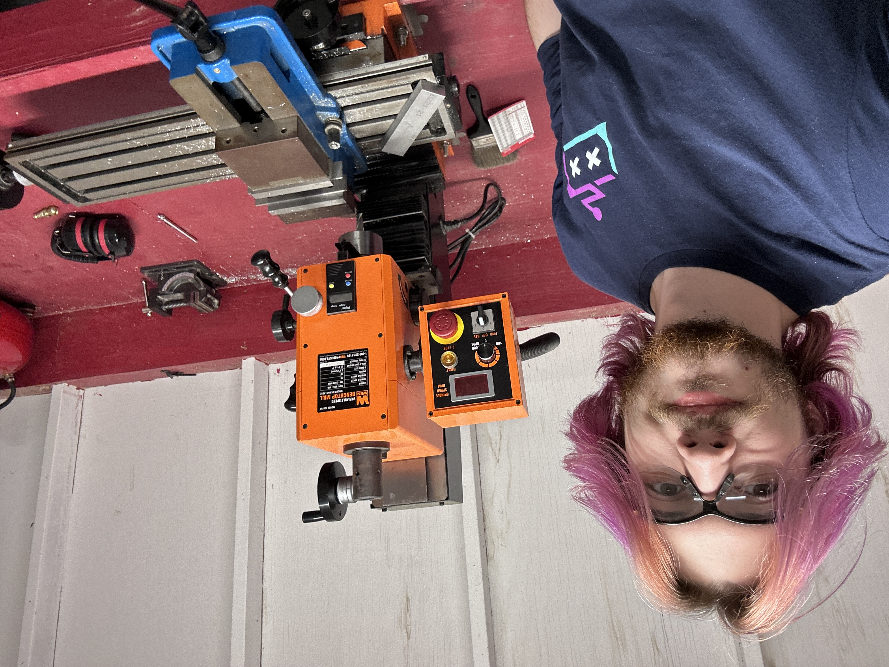

About the Skates
Inspired by the many kinds of transportation and personal vehicles around MIT, I set out over spring break to build a set of wheels of my own. Instead of making conventional skates that require dedicated footwear, I designed a system that attaches to regular running shoes or boots.
Each skate is split into two parts and uses a slip-on and latch system for easy installation, removal, and storage. The main frames are also designed as a platform for future ideas, including ice skates, platforms, and other shoe-mounted projects. This is a work in progress, and I’m excited to keep developing it.
Machining & fabrication
Aside from the TPU spacers, which provide additional clamping force, and the roller wheels, I made the skates using a broad range of metalworking and fabrication techniques. The metal bases took several hours of careful manual milling, drilling, and tapping. I also used metal-bending techniques to shape the bases around the organic, imprecise form of a shoe for a closer fit, along with laser cutting.
Fitting the skates to shoes
A test fit showing how the skate assembly attaches to a regular shoe.
Design & Build
CAD, finished assembly, and fabrication photos documenting the design and build.


